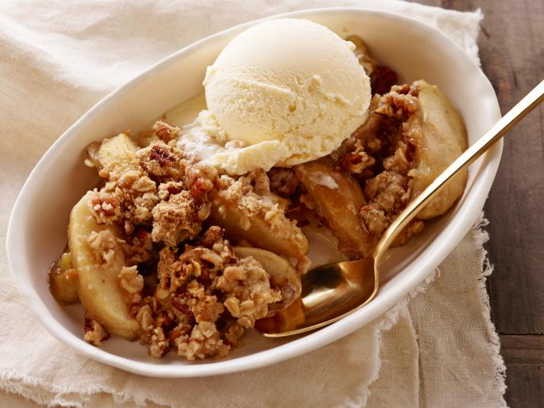

Old Fashioned Easy Apple Crisp
Description
A true classic Fall dessert, this easy apple crisp recipe is reminiscent of generations past. Pop this apple crisp in the oven and wait for the delicious smell to waft through your house!

Cooking Information
- Prep: 15 mins
- Cook: 45 mins
- Total: 1 hour
- Servings: 6
- Yield: 1
Nutrition Facts
Per Serving: 408 calories; protein 3.5g; carbohydrates 69.9g; fat 14.6g; cholesterol 11.4mg; sodium 139.2mg.
Ingredients
- 6 golden delicious apples, peeled and chopped (other varieties can be used, can also be sliced)
- 2 Tbsp granulated sugar
- 1 3/4 tsp ground cinnamon, divided
- 1 1/2 tsp lemon juice
- 1 cup light brown sugar
- 3/4 cup olf fashioned oats
- 3/4 cup all-pupose flour
- 1/2 cup cold unsalted butter, diced into small cubes
- pinch of kosher salt
Directions
- Step 1
- Preheat oven to 350 F degrees. Butter an 8×8 baking dish, or spray with non-stick cooking spray. Set aside.
- Step 2
- In a mixing bowl, add chopped apples, granulated sugar, 3/4 tsp of the cinnamon and lemon juice. Stir to combine, then transfer to prepared baking dish.
- Step 3
- In a separate mixing bowl, add topping ingredients (brown sugar, oats, flour, 1 tsp cinnamon, salt, and diced cold butter). Use a pastry cutter to cut the butter into the oat mixture, using a slight downward twisting motion, until mixture resembled pea-sized crumbs. Alternatively, you can use two forks or even your hands to cut butter into the mixture.
- Step 4
- Spread topping over apples in baking dish, and gently pat to even it out. Bake 40-50 minutes, until golden brown and bubbly.
- Step 5
- Serve warm and enjoy!